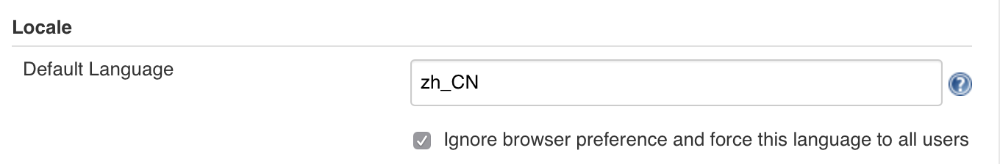

安装Locale Plugin, 重启生效。
配置【Manage Jenkins】>【Configure System】> 【Locale】
|  |
Default Language 填写 zh_CN，勾选忽略浏览器设置强制设置语言
https://github.com/jenkinsci/github-plugin
git clone https://github.com/jenkinsci/github-plugin.git mkdir target/classes
修改 rest-assured 去掉 exclusions 配置项
<dependency>
<groupId>com.jayway.restassured</groupId>
<artifactId>rest-assured</artifactId>
<!--1.7.2 is the last version that use a compatible groovy version-->
<version>1.7.2</version>
<scope>test</scope>
<exclusions>
<exclusion>
<groupId>org.apache.httpcomponents</groupId>
<artifactId>*</artifactId>
</exclusion>
</exclusions>
</dependency>
编译插件
[root@netkiller github-plugin]# mvn hpi:hpi [INFO] Scanning for projects... [INFO] [INFO] ------------------------------------------------------------------------ [INFO] Building GitHub plugin 1.29.4-SNAPSHOT [INFO] ------------------------------------------------------------------------ [INFO] [INFO] --- maven-hpi-plugin:1.120:hpi (default-cli) @ github --- [INFO] Generating /srv/github-plugin/target/github/META-INF/MANIFEST.MF [INFO] Checking for attached .jar artifact ... [INFO] Generating jar /srv/github-plugin/target/github.jar [INFO] Building jar: /srv/github-plugin/target/github.jar [INFO] Exploding webapp... [INFO] Copy webapp webResources to /srv/github-plugin/target/github [INFO] Assembling webapp github in /srv/github-plugin/target/github [INFO] Generating hpi /srv/github-plugin/target/github.hpi [INFO] Building jar: /srv/github-plugin/target/github.hpi [INFO] ------------------------------------------------------------------------ [INFO] BUILD SUCCESS [INFO] ------------------------------------------------------------------------ [INFO] Total time: 4.161s [INFO] Finished at: Mon Jan 07 12:03:45 CST 2019 [INFO] Final Memory: 29M/290M [INFO] ------------------------------------------------------------------------
进入 github --> Settings --> Developer settings --> Personal Access Token --> Generate new token
repo 和 admin:repo_hook
Settings -> Webhooks -> Add webhook
系统管理 --> 系统设置 --> GitHub --> Add GitHub Sever
https://jenkins.io/doc/book/pipeline/docker/
vim /lib/systemd/system/docker.service ExecStart=/usr/bin/dockerd -H fd:// 改为 ExecStart=/usr/bin/dockerd -H fd:// -H unix:///var/run/docker.sock -H tcp://0.0.0.0:2375
吧 jenkins 用户添加到 docker 组
gpasswd -a jenkins docker
重启 docker
systemctl daemon-reload systemctl restart docker 如果是 Docker 方式运行 Jenkins 需要启动 jenkins docker start jenkins
参考例子
root@ubuntu:~# cat /lib/systemd/system/docker.service [Unit] Description=Docker Application Container Engine Documentation=https://docs.docker.com After=network-online.target docker.socket firewalld.service Wants=network-online.target Requires=docker.socket [Service] Type=notify # the default is not to use systemd for cgroups because the delegate issues still # exists and systemd currently does not support the cgroup feature set required # for containers run by docker ExecStart=/usr/bin/dockerd -H fd:// -H unix:///var/run/docker.sock -H tcp://0.0.0.0:2375 ExecReload=/bin/kill -s HUP $MAINPID LimitNOFILE=1048576 # Having non-zero Limit*s causes performance problems due to accounting overhead # in the kernel. We recommend using cgroups to do container-local accounting. LimitNPROC=infinity LimitCORE=infinity # Uncomment TasksMax if your systemd version supports it. # Only systemd 226 and above support this version. TasksMax=infinity TimeoutStartSec=0 # set delegate yes so that systemd does not reset the cgroups of docker containers Delegate=yes # kill only the docker process, not all processes in the cgroup KillMode=process # restart the docker process if it exits prematurely Restart=on-failure StartLimitBurst=3 StartLimitInterval=60s [Install] WantedBy=multi-user.target


https://jenkins.io/doc/pipeline/steps/jacoco/
stage('Build') {
steps {
sh 'mvn test'
junit '*/build/test-results/*.xml'
step( [ $class: 'JacocoPublisher' ] )
}
}
配置jacoco
The jacoco pipeline step configuration uses this format:
step([$class: 'JacocoPublisher',
execPattern: 'target/*.exec',
classPattern: 'target/classes',
sourcePattern: 'src/main/java',
exclusionPattern: 'src/test*'
])
Or with a simpler syntax for declarative pipeline:
jacoco(
execPattern: 'target/*.exec',
classPattern: 'target/classes',
sourcePattern: 'src/main/java',
exclusionPattern: 'src/test*'
)
完整的例子
node {
stage('Checkout') {
git 'https://github.com/bg7nyt/junit4-jacoco.git'
}
stage('Build') {
sh "mvn -Dmaven.test.failure.ignore clean package"
}
stage('Test') {
sh "mvn test"
}
stage('Results') {
junit '**/target/surefire-reports/TEST-*.xml'
archive 'target/*.jar'
step( [ $class: 'JacocoPublisher' ] )
}
}
使用说明: https://github.com/jenkinsci/ssh-steps-plugin#pipeline-steps
!groovy
def getHost(){
def remote = [:]
remote.name = 'mysql'
remote.host = '192.168.8.108'
remote.user = 'root'
remote.port = 22
remote.password = 'qweasd'
remote.allowAnyHosts = true
return remote
}
pipeline {
agent {label 'master'}
environment{
def server = ''
}
stages {
stage('init-server'){
steps {
script {
server = getHost()
}
}
}
stage('use'){
steps {
script {
sshCommand remote: server, command: """
if test ! -d aaa/ccc ;then mkdir -p aaa/ccc;fi;cd aaa/ccc;rm -rf ./*;echo 'aa' > aa.log
"""
}
}
}
}
}
####################################
node {
def remote = [:]
remote.name = 'test'
remote.host = 'test.domain.com'
remote.user = 'root'
remote.password = 'password'
remote.allowAnyHosts = true
stage('Remote SSH') {
sshCommand remote: remote, command: "ls -lrt"
sshCommand remote: remote, command: "for i in {1..5}; do echo -n \"Loop \$i \"; date ; sleep 1; done"
}
}
node {
def remote = [:]
remote.name = 'test'
remote.host = 'test.domain.com'
remote.user = 'root'
remote.password = 'password'
remote.allowAnyHosts = true
stage('Remote SSH') {
writeFile file: 'abc.sh', text: 'ls -lrt'
sshScript remote: remote, script: "abc.sh"
}
}
node {
def remote = [:]
remote.name = 'test'
remote.host = 'test.domain.com'
remote.user = 'root'
remote.password = 'password'
remote.allowAnyHosts = true
stage('Remote SSH') {
writeFile file: 'abc.sh', text: 'ls -lrt'
sshPut remote: remote, from: 'abc.sh', into: '.'
}
}
node {
def remote = [:]
remote.name = 'test'
remote.host = 'test.domain.com'
remote.user = 'root'
remote.password = 'password'
remote.allowAnyHosts = true
stage('Remote SSH') {
sshGet remote: remote, from: 'abc.sh', into: 'abc_get.sh', override: true
}
}
node {
def remote = [:]
remote.name = 'test'
remote.host = 'test.domain.com'
remote.user = 'root'
remote.password = 'password'
remote.allowAnyHosts = true
stage('Remote SSH') {
sshRemove remote: remote, path: "abc.sh"
}
}
def remote = [:]
remote.name = "node-1"
remote.host = "10.000.000.153"
remote.allowAnyHosts = true
node {
withCredentials([sshUserPrivateKey(credentialsId: 'sshUser', keyFileVariable: 'identity', passphraseVariable: '', usernameVariable: 'userName')]) {
remote.user = userName
remote.identityFile = identity
stage("SSH Steps Rocks!") {
writeFile file: 'abc.sh', text: 'ls'
sshCommand remote: remote, command: 'for i in {1..5}; do echo -n \"Loop \$i \"; date ; sleep 1; done'
sshPut remote: remote, from: 'abc.sh', into: '.'
sshGet remote: remote, from: 'abc.sh', into: 'bac.sh', override: true
sshScript remote: remote, script: 'abc.sh'
sshRemove remote: remote, path: 'abc.sh'
}
}
}
################################
https://plugins.jenkins.io/rancher
https://jenkins.io/doc/pipeline/steps/rancher/
创建 Rancher API
在Jenkins的Credentials中添加一个类型为Username with password的认证，username和password分别对应于上一步生成的Access Key和Secret Key，如下图
然后在语法生成器中，找到rancher进行如下图的配置：
设置 environmentId ，找到你的集群，点击进入，看到URL https://rancher.netkiller.cn/v3/clusters/c-mx88f，“c-mx88f” 就是 environmentId
stage('Rancher') {
rancher confirm: false, credentialId: 'b56bd9b2-3277-4072-baae-08d73aa26549', endpoint: 'https://rancher.netkiller.cn/v2', environmentId: 'test', environments: '', image: '*/demo:1.0.0', ports: '', service: 'jenkins/demo', timeout: 50
}
https://plugins.jenkins.io/kubernetes
https://github.com/jenkinsci/kubernetes-plugin
def label = "mypod-${UUID.randomUUID().toString()}"
podTemplate(label: label) {
node(label) {
stage('Run shell') {
sh 'echo hello world'
}
}
}
GET https://<rancher_server>/v3/project/<project_id>/workloads/deployment:<rancher_namespace>:<rancher_service> # 获取一个服务的详细信息 GET https://<rancher_server>/v3/project/<project_id>/pods/?workloadId=deployment:<rancher_namespace>:<rancher_service> # 获取服务的所有容器信息 DELETE https://<rancher_server>/v3/project/<project_id>/pods/<rancher_namespace>:<container_name> # 根据容器名删除容器 PUT https://<rancher_server>/v3/project/<project_id>/workloads/deployment:<rancher_namespace>:<rancher_service> # 更新服务
// 查询服务信息
def response = httpRequest acceptType: 'APPLICATION_JSON', authentication: "${RANCHER_API_KEY}", contentType: 'APPLICATION_JSON', httpMode: 'GET', responseHandle: 'LEAVE_OPEN', timeout: 10, url: "${rancherUrl}/workloads/deployment:${rancherNamespace}:${rancherService}"
def serviceInfo = new JsonSlurperClassic().parseText(response.content)
response.close()
def dockerImage = imageName+":"+imageTag
if (dockerImage.equals(serviceInfo.containers[0].image)) {
// 如果镜像名未改变，直接删除原容器
// 查询容器名称
response = httpRequest acceptType: 'APPLICATION_JSON', authentication: "${RANCHER_API_KEY}", contentType: 'APPLICATION_JSON', httpMode: 'GET', responseHandle: 'LEAVE_OPEN', timeout: 10, url: "${rancherUrl}/pods/?workloadId=deployment:${rancherNamespace}:${rancherService}"
def podsInfo = new JsonSlurperClassic().parseText(response.content)
def containerName = podsInfo.data[0].name
response.close()
// 删除容器
httpRequest acceptType: 'APPLICATION_JSON', authentication: "${RANCHER_API_KEY}", contentType: 'APPLICATION_JSON', httpMode: 'DELETE', responseHandle: 'NONE', timeout: 10, url: "${rancherUrl}/pods/${rancherNamespace}:${containerName}"
} else {
// 如果镜像名改变，使用新镜像名更新容器
serviceInfo.containers[0].image = dockerImage
// 更新
def updateJson = new JsonOutput().toJson(serviceInfo)
httpRequest acceptType: 'APPLICATION_JSON', authentication: "${RANCHER_API_KEY}", contentType: 'APPLICATION_JSON', httpMode: 'PUT', requestBody: "${updateJson}", responseHandle: 'NONE', timeout: 10, url: "${rancherUrl}/workloads/deployment:${rancherNamespace}:${rancherService}"
}
https://wiki.jenkins.io/display/JENKINS/Skip+Certificate+Check+plugin
[root@localhost ~]# tail -f /var/log/jenkins/jenkins.log javax.net.ssl.SSLPeerUnverifiedException: peer not authenticated
Android Sign Plugin 依赖 Credentials Plugin，因为 Credentials Plugin 只支持 PKCS#12 格式的证书，所以先需要将生成好的 JKS 证书转换为 PKCS#12 格式：
keytool -importkeystore -srckeystore netkiller.jks -srcstoretype JKS -deststoretype PKCS12 -destkeystore netkiller.p12
复制代码添加类型为 credential，选择上传证书文件，将 PKCS#12 证书上传到并配置好 ID，本项目中使用了 ANDROID_SIGN_KEY_STORE 作为 ID。
pipeline {
...
stages {
...
stage("Sign APK") {
steps {
echo 'Sign APK'
signAndroidApks(
keyStoreId: "ANDROID_SIGN_KEY_STORE",
keyAlias: "tomczhen",
apksToSign: "**/*-prod-release-unsigned.apk",
archiveSignedApks: false,
archiveUnsignedApks: false
)
}
}
...
}
...
}